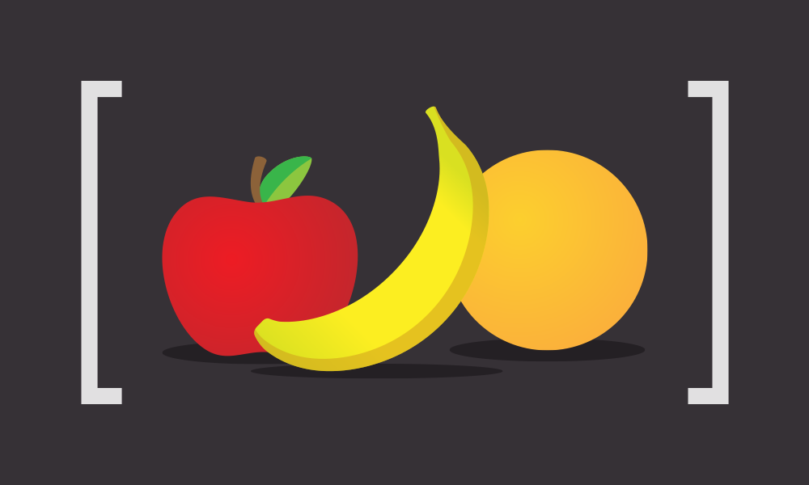

写在前面的话
前几天写了篇文章科普了下Javascript中Array.filter()的妙用，后来无意间发现了一篇好文章，一次性科普了三个API：filter、map和reduce，生动形象，尤其是配图，显然是用了心思。下面是译文：
译文

最近，一直在为一个客户做一个视觉化数据的项目，从服务端API拉取数据回来然后转换出视觉效果，自然少不了大量的数据操作，为此我一再使用Javascript中的Array 三个API：filter、map和reduce。
Map、Filter和Reduce常常被用于对一个数组做一些操作，进而转换成某个新的东西（数据类型不一定还是数组哦~）。下面是我对这三个API的直观认识：
Map

你想将一个数组中的每一项做个转换，结果生成了一个新数组，并且新数组的长度和原数组一致。
Filter

你想将一个数组做一个过滤，按照某规则提取出一些特定的项来。结果也生成了一个新数组，但新数组的长度小于或等于原数组。
Reduce
你想通过遍历一个数组的每一项来计算出一个新东西，最后生成的结果可以是任何类型的变量：一个新数组，一个新对象，一个新布尔值…
filter、map和reduce共同点就是并不会对原数组做任何改动，结果都是生成一个新变量。让我们来看一些例子：
Array.map()
现在我们有一个对象列表，其中每个对象代表的是一种变形金刚（译注：看来这位歪果仁是个变形金刚粉丝）：
那么，问题来了，如果想得到一个包含所有变形（form）的列表该怎么做呢？Array.map()让一切变得简单。它的基本使用语法是这样的：
当然，还有种更复杂点的语法场景，只不过不常用到：
callback会遍历数组的每个元素，在其中返回的每一个数值将会组成新数组。callback有多种书写方式：
命名函数：
匿名函数：
箭头函数：
ES2015的箭头函数和Array.map()搭配使用简直不能更爽了！
Array.filter()
语法：
callback将数组元素当参数传入，并返回一个布尔值。当返回值为真时，该元素被加入新数组中，反之则被过滤掉。
现在我们把这些变形金刚过滤出汽车人(Autobots)
|
|
Array.reduce()
Array.reduce()是通过遍历每个数组元素对其做运算，因此，也是三个API之间最富有技巧的，其使用语法也略显复杂：
谨记一条：我们是将数组元素通过遍历减少到一个值。比如现在有一组可组合变形金刚（译者注：我也不知道什么鬼，该怎么翻译，原词：Construction Transformers），它们能够组合成更大的变形金刚，我们可以通过代码来做出这样的组合：
|
|
Reduce的callback需要至少两个参数。第一个是从上次遍历中返回的一个值，第二个是当前数组遍历到的一个值，返回值又将当做第一个参数被传入到下一次遍历。
|
|
这样，我们可以在调用reduce的时候，将assemble当做第一个参数传入，第二个参数是用来初次调用时的初始数据。接下来的例子便是我们提供一个仅仅有名字（name）和派别（team）的变形金刚，通过reduce中的assemble我们来组合成一个强大的变形金刚吧！

|
|
这些三个基本API一旦组合起来使用，也是很强大的。在此只是根据自己的使用经验抛砖引玉，想进一步了解的同学可以移步万能的MDN有关Array API的文档。